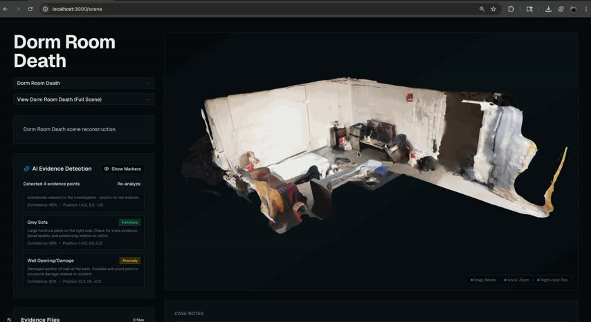

DEV DIARY // TRANSMISSION 02
3D MARKERS FROM A FLAT SCREENSHOT

Gemini is good at telling you "there's a knife, top-left of frame." It is profoundly unhelpful at telling you where that knife lives in world space. SceneSplat's vision pipeline takes a flat screenshot of the React Three Fiber viewport and has to drop a labeled marker at a precise 3D coordinate. The naive version — fire a ray from each detected box center into the scene — melts the frame budget on a dense .glb and misses constantly behind geometry.
THE SHORTCUTS THAT MATTERED
- Read the depth buffer at the detection's screen-space centroid instead of raycasting the whole BVH. One texel lookup, not a tree traversal.
- Pre-compute and cache each scene's bounding box on load; markers snap inside it and never drift into the void.
- Convert screen→world in the same camera space the screenshot was captured in, so zoom and orbit are already accounted for.
- Persist markers per session — Gemini doesn't need to re-see what it already found.
js
// one depth read beats a full raycast
const ndc = screenToNDC(box.center);
const depth = readDepthBuffer(ndc);
const world = screenToWorld(ndc, depth);
marker.position.copy(world);
Net result: markers land where a human would place them, at a fraction of the cost. The lesson I keep relearning — if a per-frame cost is uniform, it's almost always a lookup table in disguise. A depth buffer is just the 3D version.